Your complete session
Lower C
Follow the sequence at your own pace. Choose manageable loads and comfortable ranges; leave the prescribed good repetitions in reserve.
Warm up
Easy bike
3 minutes, easy
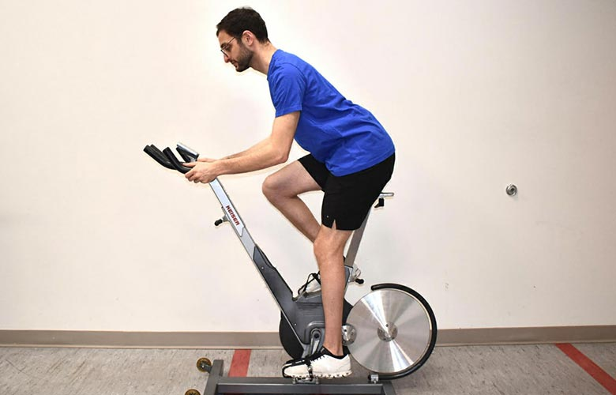
Keep this conversational and easy; adjust the bike to your comfort. Photo: Hospital for Special Surgery ↗ - Pedal comfortably without chasing fatigue.
Keep this easy. Stop a movement that produces pain, catching, apprehension or loss of control; do not force end range.
Unweighted squat rehearsal
1 × 6, comfortable depth
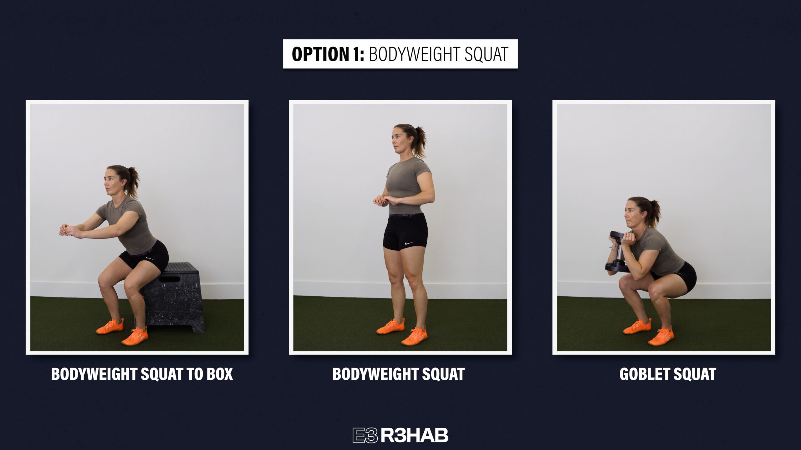
Use a comfortable depth and easy pace. Photo: E3 Rehab ↗ - Keep a comfortable foot stance and easy depth.
Keep this easy. Stop a movement that produces pain, catching, apprehension or loss of control; do not force end range.
Unweighted hip hinge
1 × 6, comfortable reach
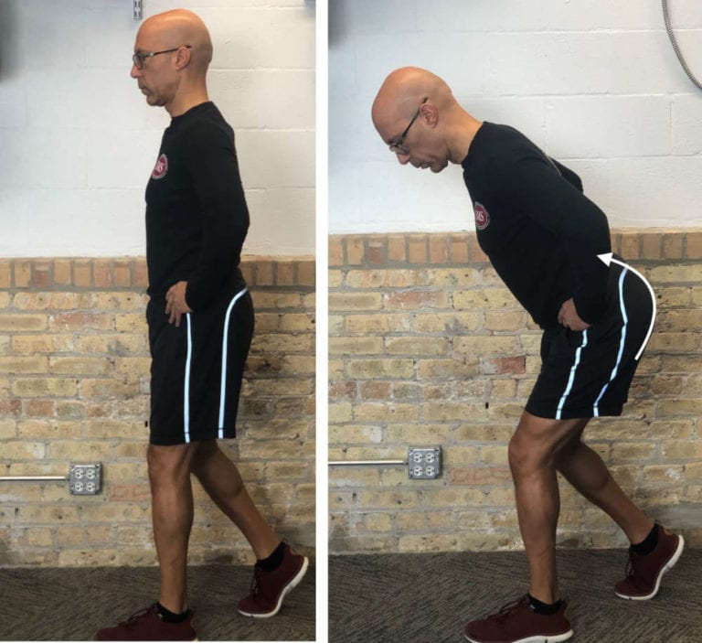
Send the hips back; use both feet evenly. Photo demonstrates a staggered stance. Photo: On Target Publications / Evan Osar ↗ - Send hips back; keep reach easy and do not chase toe touch.
Keep this easy. Stop a movement that produces pain, catching, apprehension or loss of control; do not force end range.
Supported ankle weight shift
1 × 6 each side
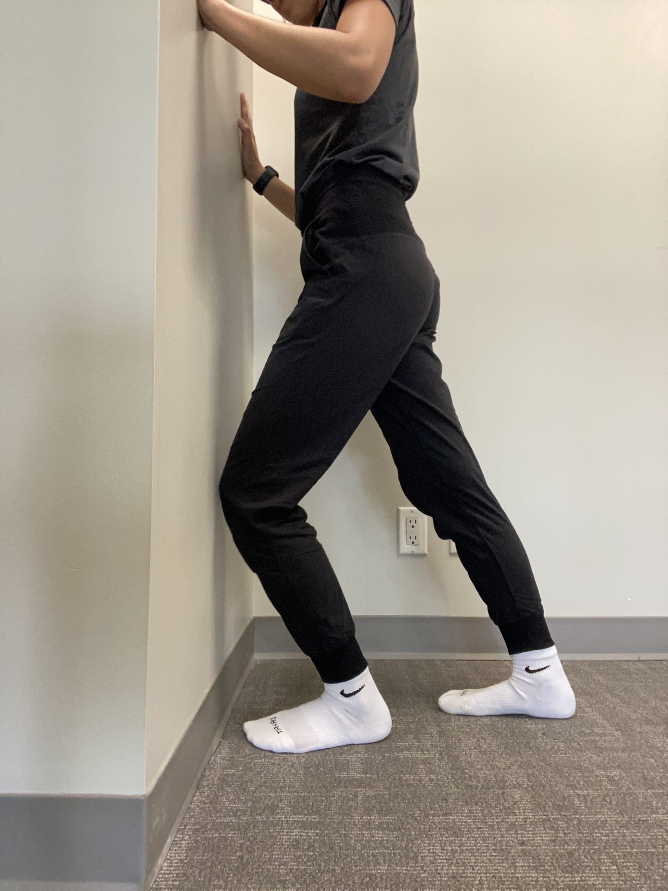
Shift only slightly forward; no need to touch the wall or force a stretch. Photo: West End Physio ↗ - Shift forward slightly with heel supported; return.
- No forced heel-attachment stretch.
Keep this easy. Stop a movement that produces pain, catching, apprehension or loss of control; do not force end range.
Easy bilateral floor calf raise
1 × 8, both legs together; includes transition
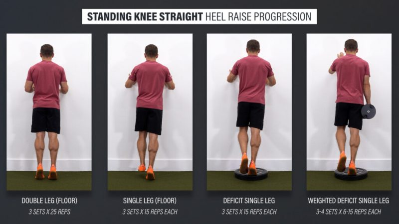
Use hand support and stop the lowering at floor level. Photo: E3 Rehab ↗ - Rise and lower together, stopping at floor level.
- Keep the rehearsal easy.
Keep this easy. Stop a movement that produces pain, catching, apprehension or loss of control; do not force end range.
Strength & targeted rehab
Supported lateral lunge
Strength · unilateral; both sides
Rest: 75 seconds to rest and switch sides; 90 seconds after both sides.
Light rehearsal sets first:
- 8 reps each side; rest 45 seconds afterward.
- 5 reps each side; rest 60 seconds afterward.
- 3 reps each side; rest 90 seconds afterward.
2 × 8–10 each side · 2–3 good reps left
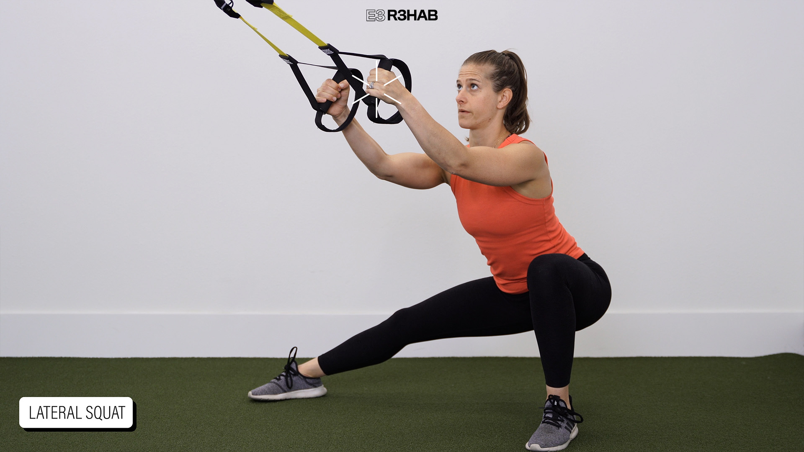
Use a shallower lateral shift than shown if needed; hold a stable support. Photo: E3 Rehab ↗ - Hold support and shift into a shallow lateral squat over one leg.
- Keep comfortable foot contact and stop before groin pinch.
Stop for new or increasing joint/tendon-region pain, loss of control or altered everyday function. Repeat the last tolerable dose or reduce it; persistent or substantial recurrence warrants assessment.
Leg-extension machine
Strength · bilateral simultaneous; both legs together
Rest: 120 seconds between sets.
Light rehearsal sets first:
- 6 reps; rest 60 seconds afterward.
- 3 reps; rest 90 seconds afterward.
3 × 8–12 · 2–3 good reps left
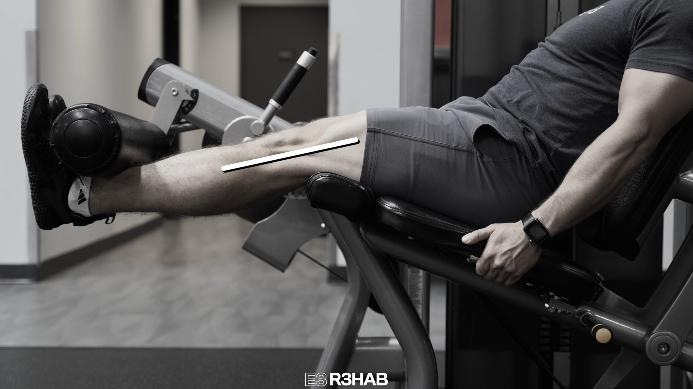
Use your comfortable arc; lighter and shorter for the swap. Photo: E3 Rehab ↗ - Align the knee with the machine pivot and place the pad above the ankle.
- Straighten both knees together through a comfortable arc; lower under control.
Stop for new or increasing joint/tendon-region pain, loss of control or altered everyday function. Repeat the last tolerable dose or reduce it; persistent or substantial recurrence warrants assessment.
Seated leg curl
Strength · bilateral simultaneous; both legs together
Rest: 90 seconds between sets.
2 × 10–15 · 2–3 good reps left
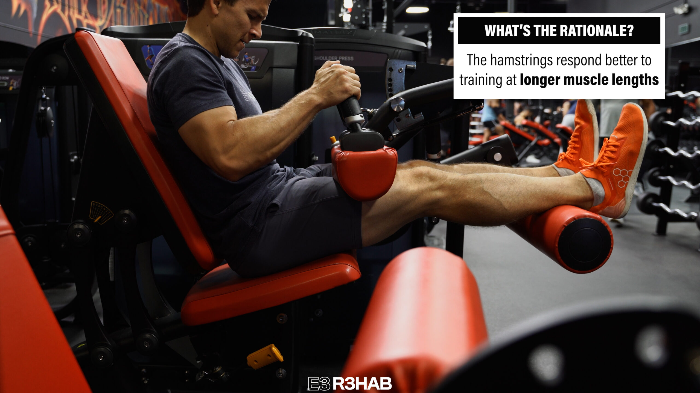
Keep the thigh pad secure; bend both knees against the resistance. Photo: E3 Rehab ↗ - Align the knee with the seated machine pivot and secure the thigh pad.
- Bend both knees together, then return without arching or lifting the hips.
Stop for new or increasing joint/tendon-region pain, loss of control or altered everyday function. Repeat the last tolerable dose or reduce it; persistent or substantial recurrence warrants assessment.
Light dumbbell side bend
Strength · both sides; one lateral direction then the other
Rest: 30 seconds to rest and switch sides; 90 seconds after both sides.
2 × 8–12 each side · 2–3 good reps left
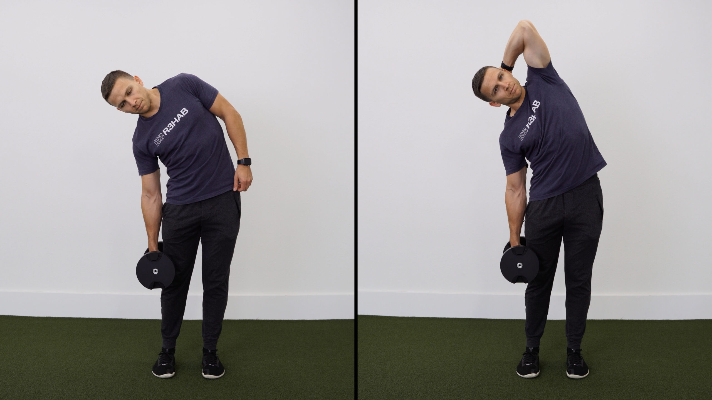
Use one light weight and a small comfortable side bend. Photo: E3 Rehab ↗ - Use a small controlled side bend; no bounce.
- Choose the side-lying option if holding weight is uncomfortable.
Stop for new or increasing joint/tendon-region pain, loss of control or altered everyday function. Repeat the last tolerable dose or reduce it; persistent or substantial recurrence warrants assessment.
45-degree back extension
Rehab · bilateral trunk/hip movement
Rest: 120 seconds between sets.
Light rehearsal sets first:
- 8 reps; rest 60 seconds afterward.
3 × 8–12 · 2–3 good reps left
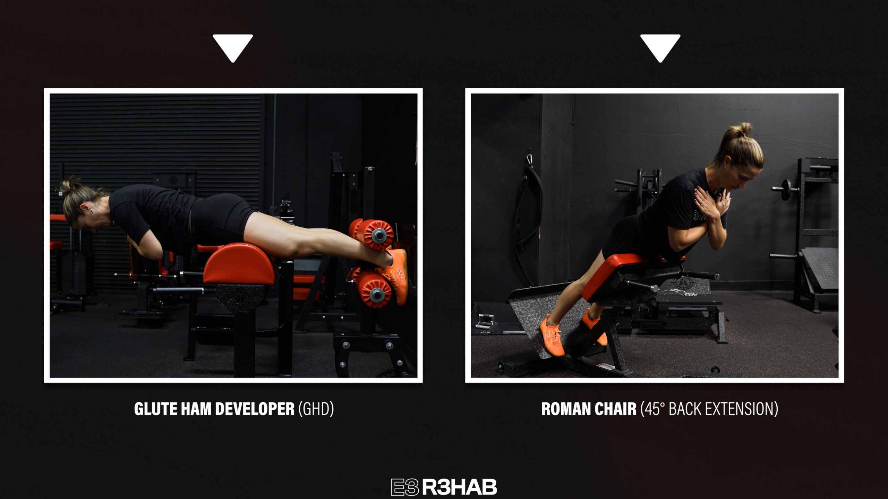
Hinge at the hips and stop at a straight body line; use a shorter unloaded arc for the swap. Photo: E3 Rehab ↗ - Pad below hip crease; feet secure.
- Return toward a comfortable straight trunk, without forced arching.
Stop for new or increasing joint/tendon-region pain, loss of control or altered everyday function. Repeat the last tolerable dose or reduce it; persistent or substantial recurrence warrants assessment.
Standing straight-knee calf raise, floor level
Rehab · bilateral simultaneous; both legs together
Rest: 120 seconds between sets.
Light rehearsal sets first:
- 8 reps; rest 60 seconds afterward.
3 × 8–12 · 2–4 good reps left
Rise and lower from floor level. Add tolerable load only as prescribed. Photo: E3 Rehab ↗ - Both legs together; no below-floor heel drop.
- Choose comfortable arm support, not forced back-bar positioning.
Stop or reduce the set for increasing heel-attachment pain or loss of controlled heel-raise range. A meaningful later/next-morning increase calls for less load/range or fewer sets; persistent worsening warrants assessment.
Seated hip-adduction machine
Rehab · bilateral simultaneous; both legs together
Rest: 60 seconds between sets.
2 × 10–15 · 2–4 good reps left
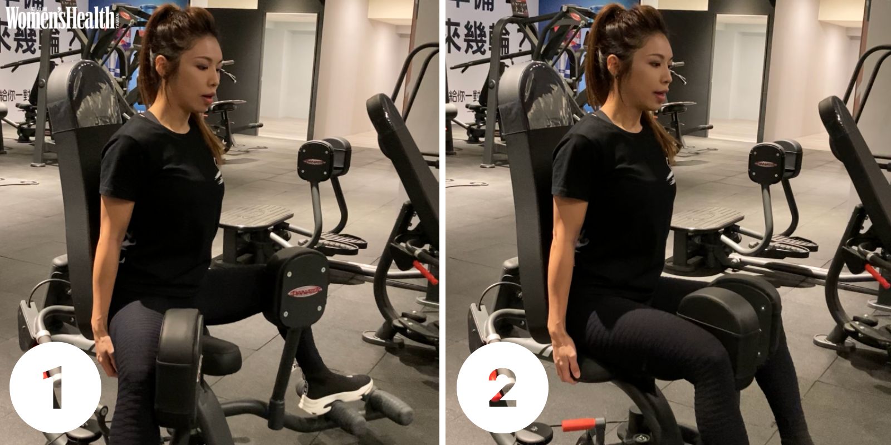
Move the thighs inward through a comfortable arc. Photo: Women’s Health Taiwan / Hearst ↗ - Bring both legs inward together.
- Avoid a forced wide groin stretch.
Stop for new or increasing joint/tendon-region pain, loss of control or altered everyday function. Repeat the last tolerable dose or reduce it; persistent or substantial recurrence warrants assessment.
Seated hip-abduction machine
Rehab · bilateral simultaneous; both legs together
Rest: 90 seconds between sets.
2 × 10–15 · 2–3 good reps left
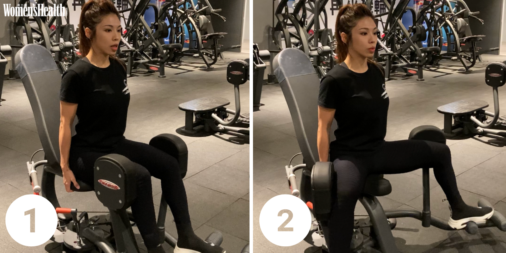
Sit comfortably and move the thighs outward. Photo: Women’s Health Taiwan / Hearst ↗ - Both legs together; pelvis stays supported.
- Use comfortable width, not maximum opening.
Stop for new or increasing joint/tendon-region pain, loss of control or altered everyday function. Repeat the last tolerable dose or reduce it; persistent or substantial recurrence warrants assessment.
Mobility
Supported seated hip rotation
1 × 6 inward-outward cycles per side
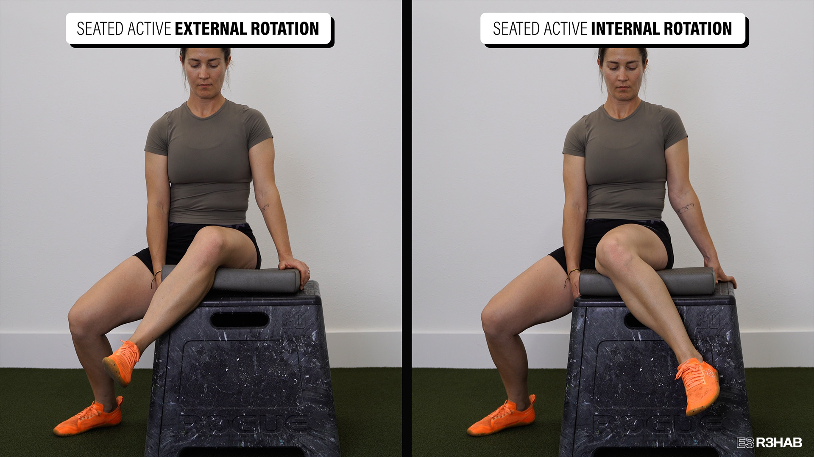
Keep the thigh supported and move the lower leg slowly. Photo: E3 Rehab ↗ - Keep thigh supported; move foot inward and outward gently.
- One cycle includes both directions; avoid groin pinch.
Keep this easy. Stop a movement that produces pain, catching, apprehension or loss of control; do not force end range.
Seated spinal flexion and extension
1 × 8 comfortable cycles
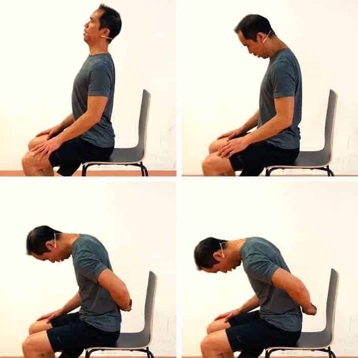
Round and extend gently within a comfortable range. Photo: Precision Movement ↗ - Round and unround gently with hands resting on thighs.
- Choose comfortable excursion; no forced end range.
Keep this easy. Stop a movement that produces pain, catching, apprehension or loss of control; do not force end range.
Gentle supported toe extension
1 × 20 seconds each foot
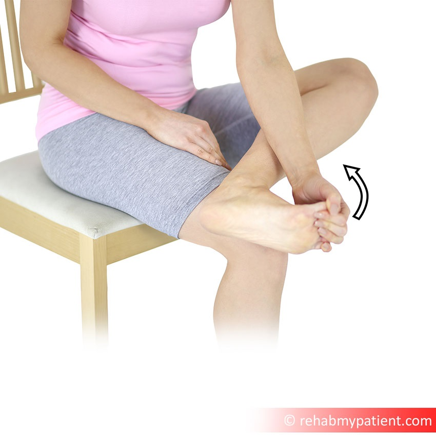
Move the toes gently; avoid pulling into pain. Photo: Rehab My Patient (via Swan Medical Group) ↗ - Use fingertips to bring toes gently upward; keep ankle comfortable.
- Do not force a calf stretch.
Keep this easy. Stop a movement that produces pain, catching, apprehension or loss of control; do not force end range.
Easy ankle circles
1 × 30 seconds each ankle
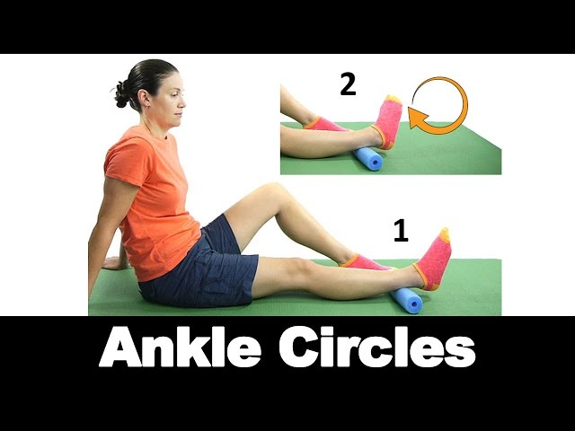
Draw slow circles; support the leg and keep the movement easy. Photo: Ask Doctor Jo ↗ - Make small comfortable circles in both directions during the bout.
Keep this easy. Stop a movement that produces pain, catching, apprehension or loss of control; do not force end range.
Use the interactive copy for swaps and temporary adjustments. No workout history is recorded.